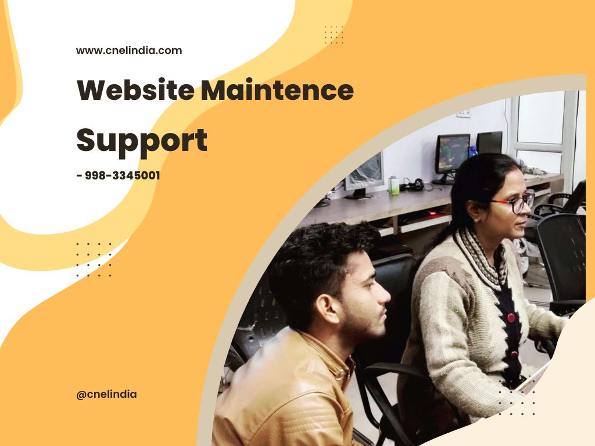

What services are offered by CnEL to maintain and support your websites
Website maintenance includes tasks such as updating software and plug-ins, fixing bugs and errors, and performing regular backups to ensure the website's data is safe.
Website support includes providing assistance to users who are experiencing issues with the website, helping them to resolve problems and continue using the website effectively.
Some examples of Website Maintenance & Support services include:
Website Maintenance & Support services are important for ensuring the ongoing reliability, stability, and security of a website, as well as for maintaining user satisfaction.
Why do you need Website Maintenance & Support services?
Website Maintenance & Support services are necessary to ensure that a website remains operational and continues to meet the needs of its users. These services are important for a number of reasons:
1.Security: Websites are vulnerable to cyber threats such as hacking, malware, and data breaches. Website Maintenance & Support services can help to protect a website from these threats by implementing security measures and providing ongoing monitoring.
2.Performance: Websites that are not regularly maintained can become slow and unresponsive, which can lead to poor user experience and lost business. Website Maintenance & Support services can help to optimize website performance and speed.
3.Compliance: Websites must comply with various laws, regulations and industry standards, such as accessibility and data protection. Website Maintenance & Support services can help to ensure that a website is compliant with these requirements.
4.Content: Website content can become outdated, which can lead to confusion or mistrust among users. Website Maintenance & Support services can help to ensure that website content is up-to-date and accurate.
5.Technical support: Website users may encounter technical issues that prevent them from using the website effectively. Website Maintenance & Support services can provide technical support to help users resolve these issues.
Overall, Website Maintenance & Support services are important for ensuring the ongoing reliability, stability, security, compliance, content and support of a website, as well as for maintaining user satisfaction.
How a small business can grow by using Website Maintenance & Support Services.
Small businesses can grow by using Website Maintenance & Support Services in a few ways:
1.Improved reliability and stability: By regularly maintaining and updating their websites, small businesses can ensure that their website are running smoothly and without errors, which can increase user satisfaction and loyalty.
2.Increased efficiency: By using Website Maintenance & Support Services, small businesses can optimize their websites to work more efficiently, which can improve productivity and reduce costs.
3.Enhanced security: These services can help small businesses to protect their websites from security threats, which can help to protect sensitive data and reduce the risk of data breaches.
4.Better scalability: With Website Maintenance & Support Services, small businesses can ensure that their websites can handle increased traffic and usage as their business grows, which can help to support growth and expansion.
5.Better user experience: By providing timely support, small businesses can improve the user experience, which can lead to positive feedback and more customers.
Overall, Website Maintenance & Support services are important for ensuring the ongoing reliability, stability, security, compliance, content and support of a website, as well as for maintaining user satisfaction.
6.SEO: Website Maintenance & Support services can help small businesses to optimize their websites for search engines, which can improve their visibility and increase traffic.
7.Content: Website Maintenance & Support services can help small businesses to keep their website content up-to-date, which can improve the user experience and increase the chances of customers returning to their website.
Overall, Website Maintenance & Support Services can help small businesses to improve the reliability, stability, efficiency, security, scalability, SEO, and content of their websites, which can support growth and expansion, and help to increase visibility and customer satisfaction.